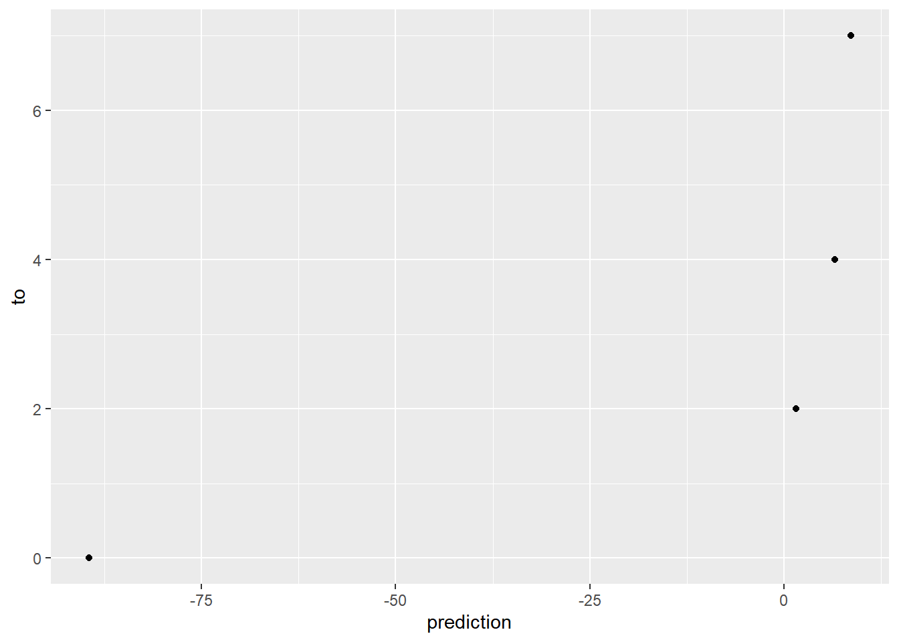
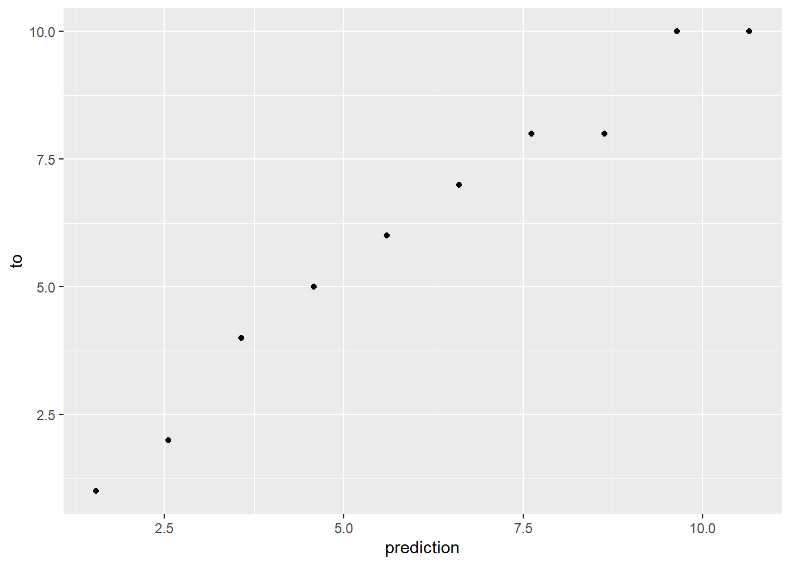
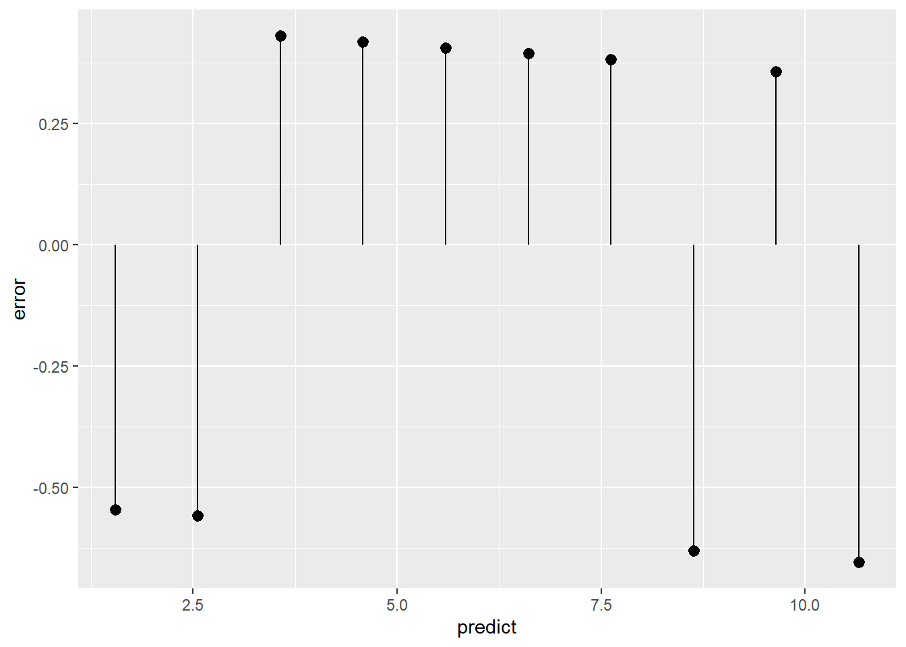
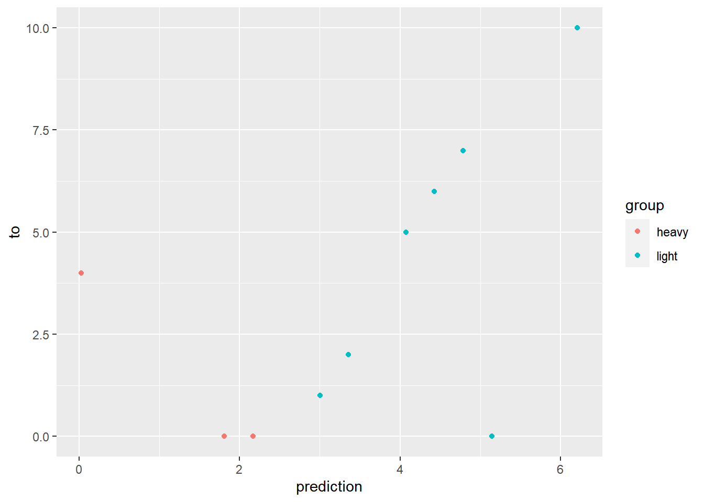
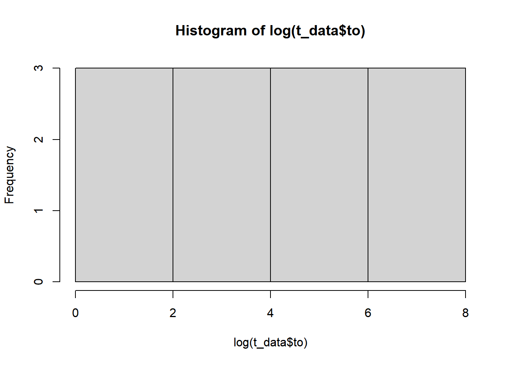

Linear Regression’s output variable is generally a continuous numerical variable.
Be careful of collinearity! This is when two input variables are highly correlated, which can lead to unexpected results.
Note: we will not typically use:
We often will use separate training and test data. The training data is used to generate the model, and the model is measured with test data.
library(tidyverse)
t_data <- tibble(
from = c(1, 2, 3, 4, 5, 6, 7, 8, 9, 10),
to = c(10, 10, 8, 8, 7, 6, 5, 4, 2, 1)
)
# Create a linear regression model predicting `to` with `from` and using the entire dataset.
model <- lm(to ~ from, data = t_data)
# Show a summary of the linear model. Pay attention to the R^2, the % of variation explained by the model.
summary(model)##
## Call:
## lm(formula = to ~ from, data = t_data)
##
## Residuals:
## Min 1Q Median 3Q Max
## -0.6545 -0.5545 0.3697 0.4030 0.4303
##
## Coefficients:
## Estimate Std. Error t value Pr(>|t|)
## (Intercept) 11.66667 0.37322 31.26 1.19e-09 ***
## from -1.01212 0.06015 -16.83 1.58e-07 ***
## ---
## Signif. codes: 0 '***' 0.001 '**' 0.01 '*' 0.05 '.' 0.1 ' ' 1
##
## Residual standard error: 0.5463 on 8 degrees of freedom
## Multiple R-squared: 0.9725, Adjusted R-squared: 0.9691
## F-statistic: 283.1 on 1 and 8 DF, p-value: 1.576e-07# new data
t_new_data <- tibble(
from = c(3, 5, 10, 100),
to = c(7, 4, 2, 0)
)
# Predict the results with new data, storing as a vector
predicted_results <- predict(model, newdata = t_new_data)
# Place this back into the original tibble to measure accuracy.
t_new_data <- t_new_data %>%
mutate(prediction = predicted_results)
ggplot(data = t_new_data) +
geom_point(mapping = aes(x = prediction, y = to))
library(tidyverse)
t_data <- tibble(
from = c(1, 2, 3, 4, 5, 6, 7, 8, 9, 10),
to = c(10, 10, 8, 8, 7, 6, 5, 4, 2, 1)
)
# Create a linear regression model predicting `to` with `from` and using the entire dataset.
model <- lm(to ~ from, data = t_data)
# Predict the results, storing on the tibble.
t_data <- t_data %>%
mutate(prediction = predict(model, newdata = t_data))
# Place this back into the original tibble to visualize the actual error. Note that we should have x = y
ggplot(data = t_data) +
geom_point(mapping = aes(x = prediction, y = to))
library(tidyverse)
t_data <- tibble(
from = c(1, 2, 3, 4, 5, 6, 7, 8, 9, 10),
to = c(10, 10, 8, 8, 7, 6, 5, 4, 2, 1)
)
# Create a linear regression model predicting `to` with `from` and using the entire dataset.
model <- lm(to ~ from, data = t_data)
# Predict the results, storing on the tibble.
t_data <- t_data %>%
mutate(predict = predict(model, newdata = t_data),
error = to - predict)
# Place this back into the original tibble to visualize the actual error. Note that we should have x = y
ggplot(data = t_data) +
geom_pointrange(mapping = aes(x = predict,
y = error,
ymin = 0,
ymax = error))
The RMSE works by taking the prediction less actual, squaring it, taking the mean, and then taking the sqrt of the mean. It should be read as the typical prediction error. Note that it will never be a negative number!
One useful measure to compare it against is the standard deviation of the data.
library(tidyverse)
t_data <- tibble(
from = c(1, 2, 3, 4, 5, 6, 7, 8, 9, 10),
to = c(10, 10, 8, 8, 7, 6, 5, 4, 2, 1)
)
# Create a linear regression model predicting `to` with `from` and using the entire dataset.
model <- lm(to ~ from, data = t_data)
# Predict the results, storing on the tibble.
t_data <- t_data %>%
mutate(predict = predict(model, newdata = t_data),
residuals = to - predict)
# Take the mean error squared, and then take the sqrt.
error <- sqrt(mean(t_data$residuals ^2 ))
print(error)## [1] 0.4886593R^2 is a measure of how well the model fits the data. It will be a number between 0-1. It is the percentage of the total variance accounted for by the model.
library(tidyverse)
t_data <- tibble(
from = c(1, 2, 3, 4, 5, 6, 7, 8, 9, 10),
to = c(10, 10, 8, 8, 7, 6, 5, 4, 2, 1)
)
# Create a linear regression model predicting `to` with `from` and using the entire dataset.
model <- lm(to ~ from, data = t_data)
# Predict the results, storing on the tibble.
t_data <- t_data %>%
mutate(predict = predict(model, newdata = t_data),
error = to - predict,
error2 = error ^ 2)
# Take the `sum` of the squared error
residual_sum_of_squares <- sum(t_data$error2)
# Find the difference between the mean and every row,
# i.e., the total variation.
total_variation_in_model <- t_data$to - mean(t_data$to)
# Take the sum of the squared variation
total_sum_of_squares <- sum(total_variation_in_model ^ 2)
# Calculate R^2
r2 <- 1 - (residual_sum_of_squares / total_sum_of_squares)
print(r2)## [1] 0.9725215summary(model)##
## Call:
## lm(formula = to ~ from, data = t_data)
##
## Residuals:
## Min 1Q Median 3Q Max
## -0.6545 -0.5545 0.3697 0.4030 0.4303
##
## Coefficients:
## Estimate Std. Error t value Pr(>|t|)
## (Intercept) 11.66667 0.37322 31.26 1.19e-09 ***
## from -1.01212 0.06015 -16.83 1.58e-07 ***
## ---
## Signif. codes: 0 '***' 0.001 '**' 0.01 '*' 0.05 '.' 0.1 ' ' 1
##
## Residual standard error: 0.5463 on 8 degrees of freedom
## Multiple R-squared: 0.9725, Adjusted R-squared: 0.9691
## F-statistic: 283.1 on 1 and 8 DF, p-value: 1.576e-07We generally will split our test/training data to make sure that we are not over-learning from our data.
We split data by generating a new column, filled with 0 or 1 values.
library(tidyverse)
# Our dataset.
t_data <- tibble(
id = 1:1000,
values = rep( c('A', 'B'), 500)
)
# Create a vector of 1 and 0s
# x is a vector of values you want to get.
# size is the number of rows (match your tibble)
# replace says to not remove each value from X
# prob sets how likely each of the values should be.
select <- sample( x = c('test', 'train'),
size = 1000,
replace = TRUE,
prob = c(0.1, 0.9))
# Add to your tibble
t_data <- mutate(t_data, select = select)
# Create test and train datasets
t_test <- filter(t_data, select == 'test')
t_train <- filter(t_data, select == 'train')
# Train your model on t_test
# Use predict with t_trainCross validation is a standard technique to split our data. It will generate multiple small splits, and then see how we do on each split.
When we are done, we will generate a final model with all of the data. The cross-validation will only help us with the accuracy of the modeling process. It can not tell us the final model accuracy. We will only know that with new data that it hasn’t been tested on yet.
Splits are created with vtreat, by selecting the row numbers for each split.
library(tidyverse)
library(vtreat)
t_data <- tibble(
from = c(1, 2, 3, 4, 5, 6, 7, 8, 9, 10),
to = c(10, 10, 8, 8, 7, 6, 5, 4, 2, 1)
)
nRows = nrow(t_data)
# Create 3 splits
splits <- vtreat::kWayCrossValidation(nRows = nRows, nSplits = 3)
# splits is now 3 lists, each with a train and an app.
# Values are the indexes to select for train/test.
str(splits)## List of 3
## $ :List of 2
## ..$ train: int [1:7] 2 3 4 6 8 9 10
## ..$ app : int [1:3] 1 7 5
## $ :List of 2
## ..$ train: int [1:6] 1 5 7 8 9 10
## ..$ app : int [1:4] 3 2 4 6
## $ :List of 2
## ..$ train: int [1:7] 1 2 3 4 5 6 7
## ..$ app : int [1:3] 10 8 9
## - attr(*, "splitmethod")= chr "kwaycross"To apply, the splits, we have to put lm instead of a loop. We will go into each split, create new test/train datasets, and then run lm.
each split.
library(tidyverse)
library(vtreat)
t_data <- tibble(
from = c(1, 2, 3, 4, 5, 6, 7, 8, 9, 10),
to = c(10, 10, 8, 8, 7, 6, 5, 4, 2, 1)
)
nRows <- nrow(t_data)
nSplits <- 3
# Create 3 splits
# Pass NULL as the 3rd and 4th argument.
splits <- vtreat::kWayCrossValidation(nRows = nRows,
nSplits = nSplits,
NULL, NULL)
# For each split,
# Save our current split in i,
# Start with index of 1,
# Go until we hit the max number of splits
for (i in 1:nSplits) {
# Make it easy to grab the current split
# Note that [[]] braces
# splits[[1]] returns the value
# splits[1] returns a list with one item.
split <- splits[[i]]
# Build model
# Note that we use train.
# Note that we use [ c(1, 2, 4, 9), ]... to select
# the indexes of the rows we want.
# We must have the trailing comma! Otherwise, returns
# the wrong selection.
model <- lm(to ~ from, data = t_data[split$train, ])
# Make predictions!
predictions <- predict(model, newdata = t_data[split$app, ])
print(model)
# Calculate residuals
residuals <- t_data[split$app, ]$to - predictions
print(residuals)
# We will probably want to calculate RSME.
rsme <- sqrt( mean(residuals ^ 2) )
print(rsme)
}##
## Call:
## lm(formula = to ~ from, data = t_data[split$train, ])
##
## Coefficients:
## (Intercept) from
## 11.4258 -0.9725
##
## 1 2 3
## -0.6737288 0.4639831 0.4364407
## [1] 0.5353103
##
## Call:
## lm(formula = to ~ from, data = t_data[split$train, ])
##
## Coefficients:
## (Intercept) from
## 11.775 -1.024
##
## 1 2 3 4
## 0.4176707 -0.7028112 0.3935743 -0.5341365
## [1] 0.5264492
##
## Call:
## lm(formula = to ~ from, data = t_data[split$train, ])
##
## Coefficients:
## (Intercept) from
## 11.932 -1.055
##
## 1 2 3
## -0.8767123 0.3972603 0.1780822
## [1] 0.5651411We deal with categorical variables by converting them into 0/1 hot one variables. The key is that we convert all but one value into a new column. If we included all of the values, then we would end up with multicollinearity.
library(tidyverse)
# Our dataset.
t_data <- tibble(
from = c(1, 2, 3, 4, 5, 6, 7, 8, 9, 10),
to = c(10, 0, 0, 0, 7, 6, 5, 4, 2, 1),
group = c('light', 'heavy', 'heavy', 'light', 'light', 'light', 'light', 'heavy', 'light', 'light')
)
# Create a linear regression model predicting `to` with `from` and using the entire dataset.
model <- lm(to ~ from + group, data = t_data)
# Predict the results, storing on the tibble.
t_data <- mutate(t_data, prediction = predict(model, newdata = t_data))
# Place this back into the original tibble to visualize the actual error. Note that we should have x = y
ggplot(data = t_data) +
geom_point(mapping = aes(x = prediction, y = to, color = group))
summary(model)##
## Call:
## lm(formula = to ~ from + group, data = t_data)
##
## Residuals:
## Min 1Q Median 3Q Max
## -5.1416 -1.9540 -0.2155 2.0540 3.9739
##
## Coefficients:
## Estimate Std. Error t value Pr(>|t|)
## (Intercept) 2.8783 2.5487 1.129 0.296
## from -0.3565 0.3828 -0.931 0.383
## grouplight 3.6894 2.3993 1.538 0.168
##
## Residual standard error: 3.352 on 7 degrees of freedom
## Multiple R-squared: 0.2752, Adjusted R-squared: 0.06817
## F-statistic: 1.329 on 2 and 7 DF, p-value: 0.3241A log transform will convert highly-right-disorted data into more of a normal distribution.
library(tidyverse)
# Our dataset.
t_data <- tibble(
from = c(1, 1, 1, 2, 2, 2, 3, 3, 3, 4, 4, 4),
to = c(1, 2, 1, 10, 11, 9, 100, 110, 90, 1000, 900, 1100)
)
hist(log(t_data$to))
# Create a linear regression model predicting `to` with `from` and using the entire dataset.
model <- lm(to ~ from, data = t_data)
summary(model)##
## Call:
## lm(formula = to ~ from, data = t_data)
##
## Residuals:
## Min 1Q Median 3Q Max
## -342.13 -166.43 23.37 186.32 359.27
##
## Coefficients:
## Estimate Std. Error t value Pr(>|t|)
## (Intercept) -493.7 186.5 -2.647 0.02444 *
## from 308.6 68.1 4.531 0.00109 **
## ---
## Signif. codes: 0 '***' 0.001 '**' 0.01 '*' 0.05 '.' 0.1 ' ' 1
##
## Residual standard error: 263.8 on 10 degrees of freedom
## Multiple R-squared: 0.6725, Adjusted R-squared: 0.6397
## F-statistic: 20.53 on 1 and 10 DF, p-value: 0.001089# Use a log transform on the non-normal data
model2 <- lm(log(to) ~ from, data = t_data)
summary(model2)##
## Call:
## lm(formula = log(to) ~ from, data = t_data)
##
## Residuals:
## Min 1Q Median 3Q Max
## -0.19577 -0.13427 -0.03761 0.05648 0.53242
##
## Coefficients:
## Estimate Std. Error t value Pr(>|t|)
## (Intercept) -2.07154 0.14666 -14.12 6.22e-08 ***
## from 2.23227 0.05355 41.68 1.51e-12 ***
## ---
## Signif. codes: 0 '***' 0.001 '**' 0.01 '*' 0.05 '.' 0.1 ' ' 1
##
## Residual standard error: 0.2074 on 10 degrees of freedom
## Multiple R-squared: 0.9943, Adjusted R-squared: 0.9937
## F-statistic: 1737 on 1 and 10 DF, p-value: 1.514e-12# Predicted values, converted back into normal form.
exp( predict(model2, newdata = t_data))## 1 2 3 4 5 6 7
## 1.174367 1.174367 1.174367 10.946225 10.946225 10.946225 102.029296
## 8 9 10 11 12
## 102.029296 102.029296 951.010718 951.010718 951.010718Tracking the error of a log variable is a little different. We generally want error as a ratio to be minimized, rather than error as an absolute number.
As a result, we want to calculate the relative RMSE.
library(tidyverse)
# Our dataset.
t_data <- tibble(
from = c(1, 1, 1, 2, 2, 2, 3, 3, 3, 4, 4, 4),
to = c(2, 3, 4, 10, 11, 9, 100, 110, 90, 1000, 900, 1100)
)
t_data <- mutate(t_data, to_log = log(to))
# Use a log transform on the non-normal data
model <- lm(to_log ~ from, data = t_data)
t_data <- t_data %>%
mutate(prediction = predict(model, t_data),
residual = prediction - to_log,
prediction_non_log = exp(prediction))
rmse <- sqrt(mean(t_data$residual ^ 2))
rmse_relative <- sqrt(mean((t_data$residual / t_data$to_log)^2))
print(t_data)## # A tibble: 12 × 6
## from to to_log prediction residual prediction_non_log
## <dbl> <dbl> <dbl> <dbl> <dbl> <dbl>
## 1 1 2 0.693 0.741 0.0474 2.10
## 2 1 3 1.10 0.741 -0.358 2.10
## 3 1 4 1.39 0.741 -0.646 2.10
## 4 2 10 2.30 2.72 0.422 15.2
## 5 2 11 2.40 2.72 0.326 15.2
## 6 2 9 2.20 2.72 0.527 15.2
## 7 3 100 4.61 4.71 0.103 111.
## 8 3 110 4.70 4.71 0.00761 111.
## 9 3 90 4.50 4.71 0.208 111.
## 10 4 1000 6.91 6.69 -0.216 806.
## 11 4 900 6.80 6.69 -0.111 806.
## 12 4 1100 7.00 6.69 -0.311 806.print(exp(rmse))## [1] 1.393176print(exp(rmse_relative))## [1] 1.211934We can also transform an input variable. You can use the
I() function to do math, but it is often easier to modify
the base tibble.
library(tidyverse)
# Our dataset.
t_data <- tibble(
from = c(1, 1, 1, 2, 2, 2, 3, 3, 3, 4, 4, 4),
to = c(1, 2, 1, 4, 5, 4, 9, 10, 11, 16, 14, 15)
)
# Create a squared input
t_data <- t_data %>%
mutate(from_squared = from * from)
# Create a linear regression model predicting `to` with `from` and using the entire dataset.
model <- lm(to ~ from_squared, data = t_data)
summary(model)##
## Call:
## lm(formula = to ~ from_squared, data = t_data)
##
## Residuals:
## Min 1Q Median 3Q Max
## -1.4858 -0.5362 -0.2468 0.5239 1.9535
##
## Coefficients:
## Estimate Std. Error t value Pr(>|t|)
## (Intercept) 0.76744 0.45827 1.675 0.125
## from_squared 0.91990 0.04871 18.884 3.76e-09 ***
## ---
## Signif. codes: 0 '***' 0.001 '**' 0.01 '*' 0.05 '.' 0.1 ' ' 1
##
## Residual standard error: 0.9583 on 10 degrees of freedom
## Multiple R-squared: 0.9727, Adjusted R-squared: 0.97
## F-statistic: 356.6 on 1 and 10 DF, p-value: 3.759e-09Outcomes:
Help: https://www.youtube.com/watch?v=EKm0spFxFG4
Logistic regression is used when we want to predict a yes/no event, rather than a continuous variable.
library(tidyverse)
# Our dataset.
t_data <- tibble(
from = c(1, 1, 1, 2, 2, 2, 3, 3, 3, 4, 4, 4),
to = c("N", "N", "N", "N", "Y", "Y", "N", "Y", "Y", "Y", "Y", "Y")
)
# If the to isn't a number, do a conversion.
t_data <- mutate(t_data, to = ifelse(to == "Y", 1, 0))
model <- glm(to ~ from, data = t_data, family = binomial)
summary(model)##
## Call:
## glm(formula = to ~ from, family = binomial, data = t_data)
##
## Coefficients:
## Estimate Std. Error z value Pr(>|z|)
## (Intercept) -4.034 2.369 -1.703 0.0886 .
## from 1.875 1.007 1.861 0.0627 .
## ---
## Signif. codes: 0 '***' 0.001 '**' 0.01 '*' 0.05 '.' 0.1 ' ' 1
##
## (Dispersion parameter for binomial family taken to be 1)
##
## Null deviance: 16.3006 on 11 degrees of freedom
## Residual deviance: 9.6378 on 10 degrees of freedom
## AIC: 13.638
##
## Number of Fisher Scoring iterations: 5R^2 is not a good measure for logistic regression. Instead, we use pseudo R-squared. A good result gives us an answer near to 1.
library(tidyverse)
library(broom)
# Our dataset.
t_data <- tibble(
from = c(1, 1, 1, 2, 2, 2, 3, 3, 3, 4, 4, 4),
to = c("N", "N", "N", "N", "Y", "Y", "N", "Y", "Y", "Y", "Y", "Y")
)
# If the to isn't a number, do a conversion.
t_data <- mutate(t_data, to = ifelse(to == "Y", 1, 0))
# Note that we add the family argument!
model <- glm(to ~ from, data = t_data, family = binomial)
t_model <- glance(model)
pseudo_r_squared <- 1 - t_model$deviance / t_model$null.deviance
print(pseudo_r_squared)## [1] 0.4087495We can use a similar approach to predict the model accuracy on new data.
library(tidyverse)
library(broom)
# Our dataset.
t_train <- tibble(
from = c(1, 1, 1, 2, 2, 2, 3, 3, 3, 4, 4, 4),
to = c(0, 0, 0, 1, 1, 0, 1, 1, 1, 1, 1, 0)
)
t_test <- tibble(
from = c(1, 3, 4, 5),
to = c(0, 0, 1, 1)
)
model <- glm(to ~ from, data = t_train, family = binomial)
# Predict syntax is a bit different, as we have to add a type.
vector_of_predictions <- predict(model, newdata = t_test, type = 'response')
print(vector_of_predictions)## 1 2 3 4
## 0.2159735 0.7426825 0.9033122 0.9679909